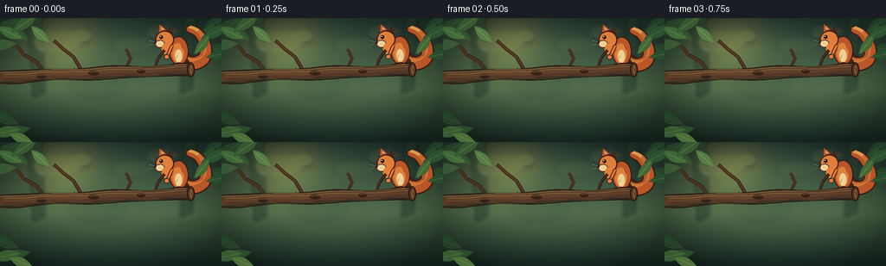
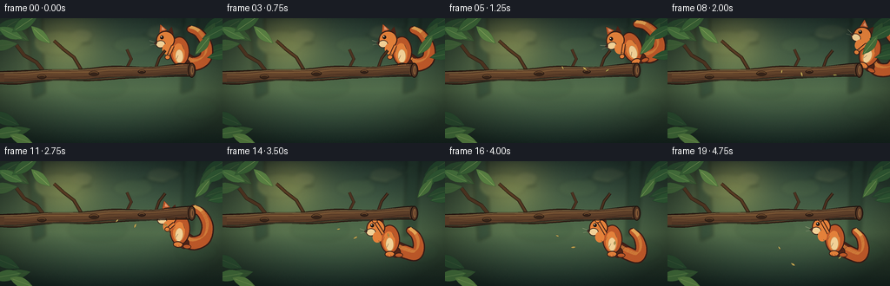

CODING AGENTS AS PIXEL WORLD MODELS
traex/DeepSeek-V4.1-Flash · dynamic_spatial_relationship_0022
点击播放 · 原生 RGB 像素
逐轮保存的候选
回放视频、检查图与代码变化。
每份候选均可单独播放。实际图片检查记录在下方工具轨迹中。
候选 01播放与检查图
点击播放 · 原生 RGB 像素


展开代码变化
--- 上一保存版本
+++ 本次保存版本
@@ -0,0 +1,670 @@
+from __future__ import annotations
+
+import math
+from pathlib import Path
+
+import numpy as np
+from PIL import Image, ImageDraw, ImageFilter
+
+import artifact_io
+
+
+W, H, S = 256, 144, 4
+N, FPS = 20, 4.0
+CASE_DIR = Path(__file__).resolve().parent
+
+
+def sc(value: float) -> int:
+ return int(round(value * S))
+
+
+def box(x0: float, y0: float, x1: float, y1: float) -> tuple[int, int, int, int]:
+ return sc(x0), sc(y0), sc(x1), sc(y1)
+
+
+def rgba(color: tuple[int, int, int], alpha: int = 255) -> tuple[int, int, int, int]:
+ return color[0], color[1], color[2], alpha
+
+
+def lerp(a: float, b: float, t: float) -> float:
+ return a + (b - a) * t
+
+
+def ease(t: float) -> float:
+ return t * t * (3.0 - 2.0 * t)
+
+
+def mix_color(
+ a: tuple[int, int, int], b: tuple[int, int, int], t: float
+) -> tuple[int, int, int]:
+ return tuple(int(round(lerp(a[i], b[i], t))) for i in range(3))
+
+
+def gradient_background() -> Image.Image:
+ yy = np.linspace(0.0, 1.0, H, dtype=np.float32)[:, None]
+ top = np.array([37, 58, 51], dtype=np.float32)
+ middle = np.array([72, 96, 67], dtype=np.float32)
+ bottom = np.array([27, 45, 39], dtype=np.float32)
+ blend = np.where(yy < 0.57, yy / 0.57, (yy - 0.57) / 0.43)
+ colors = np.where(
+ yy < 0.57,
+ top[None, :] + (middle - top)[None, :] * blend,
+ middle[None, :] + (bottom - middle)[None, :] * blend,
+ )
+ image = np.repeat(colors[:, None, :], W, axis=1)
+
+ xx, yy_grid = np.meshgrid(
+ np.linspace(-1.0, 1.0, W), np.linspace(-1.0, 1.0, H)
+ )
+ glow = np.exp(-(((xx + 0.43) / 0.43) ** 2 + ((yy_grid + 0.62) / 0.65) ** 2) * 2.0)
+ image += glow[:, :, None] * np.array([44.0, 35.0, 12.0], dtype=np.float32)
+ vignette = np.clip(1.18 - 0.36 * (xx * xx + yy_grid * yy_grid), 0.70, 1.10)
+ image *= vignette[:, :, None]
+ image = np.clip(image, 0, 255).astype(np.uint8)
+ return Image.fromarray(image).resize((W * S, H * S), Image.Resampling.BICUBIC)
+
+
+def leaf_polygon(
+ cx: float,
+ cy: float,
+ length: float,
+ width: float,
+ angle: float,
+ bend: float = 0.0,
+) -> list[tuple[int, int]]:
+ points: list[tuple[int, int]] = []
+ count = 14
+ for i in range(count):
+ t = i / (count - 1)
+ x = lerp(-length * 0.52, length * 0.52, t)
+ y = math.sin(math.pi * t) * width * 0.5 * (1.0 - 0.16 * t)
+ y += bend * math.sin(math.pi * t)
+ ca, sa = math.cos(angle), math.sin(angle)
+ points.append((sc(cx + ca * x - sa * y), sc(cy + sa * x + ca * y)))
+ for i in range(count - 2, 0, -1):
+ t = i / (count - 1)
+ x = lerp(-length * 0.52, length * 0.52, t)
+ y = -math.sin(math.pi * t) * width * 0.5 * (1.0 - 0.16 * t)
+ y += bend * math.sin(math.pi * t)
+ ca, sa = math.cos(angle), math.sin(angle)
+ points.append((sc(cx + ca * x - sa * y), sc(cy + sa * x + ca * y)))
+ return points
+
+
+def draw_leaf(
+ draw: ImageDraw.ImageDraw,
+ cx: float,
+ cy: float,
+ length: float,
+ width: float,
+ angle: float,
+ fill: tuple[int, int, int],
+ outline: tuple[int, int, int] | None = None,
+ vein: tuple[int, int, int] | None = None,
+ bend: float = 0.0,
+) -> None:
+ poly = leaf_polygon(cx, cy, length, width, angle, bend)
+ draw.polygon(poly, fill=rgba(fill), outline=rgba(outline or mix_color(fill, (18, 34, 24), 0.40)))
+ if vein is not None:
+ ca, sa = math.cos(angle), math.sin(angle)
+ x0, y0 = -length * 0.37, bend * 0.35
+ x1, y1 = length * 0.43, bend * 0.90
+ draw.line(
+ [
+ (sc(cx + ca * x0 - sa * y0), sc(cy + sa * x0 + ca * y0)),
+ (sc(cx + ca * x1 - sa * y1), sc(cy + sa * x1 + ca * y1)),
+ ],
+ fill=rgba(vein),
+ width=max(1, sc(0.45)),
+ )
+
+
+def background_details(base: Image.Image) -> Image.Image:
+ layer = Image.new("RGBA", base.size, (0, 0, 0, 0))
+ d = ImageDraw.Draw(layer, "RGBA")
+
+ # Distant trunks and branches, kept low-contrast and out of focus.
+ d.polygon(
+ [
+ (sc(31), sc(0)),
+ (sc(48), sc(0)),
+ (sc(52), sc(86)),
+ (sc(38), sc(92)),
+ ],
+ fill=rgba((30, 54, 44), 125),
+ )
+ d.polygon(
+ [
+ (sc(212), sc(0)),
+ (sc(227), sc(0)),
+ (sc(222), sc(82)),
+ (sc(208), sc(87)),
+ ],
+ fill=rgba((31, 52, 41), 125),
+ )
+ d.line(
+ [(sc(34), sc(18)), (sc(72), sc(31)), (sc(104), sc(27))],
+ fill=rgba((39, 63, 45), 100),
+ width=sc(3.2),
+ joint="curve",
+ )
+ d.line(
+ [(sc(218), sc(8)), (sc(188), sc(24)), (sc(164), sc(20))],
+ fill=rgba((37, 62, 44), 100),
+ width=sc(2.7),
+ joint="curve",
+ )
+
+ for cx, cy, rx, ry, color, alpha in [
+ (67, 28, 26, 14, (140, 155, 91), 24),
+ (94, 19, 13, 7, (205, 195, 125), 22),
+ (153, 31, 23, 10, (128, 155, 84), 20),
+ (187, 15, 18, 8, (195, 186, 115), 18),
+ (112, 79, 34, 14, (33, 67, 44), 28),
+ (226, 104, 24, 13, (39, 72, 44), 22),
+ ]:
+ d.ellipse(box(cx - rx, cy - ry, cx + rx, cy + ry), fill=rgba(color, alpha))
+
+ layer = layer.filter(ImageFilter.GaussianBlur(sc(2.1)))
+ return Image.alpha_composite(base.convert("RGBA"), layer)
+
+
+def add_background_leaves(base: Image.Image) -> Image.Image:
+ layer = Image.new("RGBA", base.size, (0, 0, 0, 0))
+ d = ImageDraw.Draw(layer, "RGBA")
+ specs = [
+ (7, 10, 37, 15, -0.55, (35, 67, 43), 220),
+ (20, 18, 31, 13, 0.55, (46, 79, 47), 220),
+ (2, 31, 35, 14, -0.10, (55, 91, 52), 210),
+ (247, 7, 34, 14, 2.58, (33, 66, 42), 225),
+ (238, 21, 37, 14, 2.10, (48, 82, 48), 220),
+ (250, 36, 31, 12, 2.82, (38, 73, 44), 210),
+ (5, 116, 37, 15, 0.40, (37, 70, 43), 210),
+ (18, 131, 34, 13, -0.20, (50, 84, 47), 210),
+ ]
+ for cx, cy, length, width, angle, fill, alpha in specs:
+ poly = leaf_polygon(cx, cy, length, width, angle)
+ d.polygon(poly, fill=rgba(fill, alpha), outline=rgba((25, 50, 34), min(255, alpha)))
+ ca, sa = math.cos(angle), math.sin(angle)
+ d.line(
+ [
+ (sc(cx - ca * length * 0.34), sc(cy - sa * length * 0.34)),
+ (sc(cx + ca * length * 0.38), sc(cy + sa * length * 0.38)),
+ ],
+ fill=rgba((102, 128, 76), 125),
+ width=sc(0.5),
+ )
+ return Image.alpha_composite(base, layer)
+
+
+def draw_twig(
+ d: ImageDraw.ImageDraw,
+ points: list[tuple[float, float]],
+ width: float,
+ color: tuple[int, int, int] = (67, 45, 31),
+) -> None:
+ scaled = [(sc(x), sc(y)) for x, y in points]
+ d.line(scaled, fill=rgba((34, 24, 18), 255), width=sc(width + 1.3), joint="curve")
+ d.line(scaled, fill=rgba(color, 255), width=sc(width), joint="curve")
+
+
+def branch_layer() -> Image.Image:
+ layer = Image.new("RGBA", (W * S, H * S), (0, 0, 0, 0))
+ d = ImageDraw.Draw(layer, "RGBA")
+
+ # Twigs behind the main bough.
+ draw_twig(d, [(53, 65), (42, 51), (28, 43), (19, 31)], 3.2, (66, 44, 30))
+ draw_twig(d, [(95, 62), (85, 45), (72, 35), (62, 26)], 2.6, (73, 48, 31))
+ draw_twig(d, [(144, 61), (151, 47), (146, 36)], 2.2, (70, 46, 31))
+ draw_twig(d, [(178, 60), (183, 46), (190, 37)], 2.0, (73, 47, 30))
+
+ upper: list[tuple[int, int]] = []
+ lower: list[tuple[int, int]] = []
+ for x in range(-8, 223, 4):
+ center = 68.7 - 0.040 * (x + 8) + 0.55 * math.sin(x * 0.082)
+ half = 6.6 + 0.9 * math.sin(x * 0.061 + 0.4)
+ upper.append((sc(x), sc(center - half)))
+ lower.append((sc(x), sc(center + half)))
+ poly = upper + list(reversed(lower))
+ d.polygon(poly, fill=rgba((85, 57, 38)))
+ d.line(upper, fill=rgba((34, 23, 17)), width=sc(1.4), joint="curve")
+ d.line(lower, fill=rgba((34, 23, 17)), width=sc(1.4), joint="curve")
+
+ # Bark bands and warm edge lighting.
+ for offset, color, width in [
+ (-3.0, (111, 78, 49), 1.7),
+ (-0.4, (96, 65, 42), 1.2),
+ (2.7, (66, 43, 31), 1.0),
+ (5.1, (50, 34, 27), 1.5),
+ ]:
+ pts = []
+ for x in range(5, 218, 7):
+ center = 68.7 - 0.040 * (x + 8) + 0.55 * math.sin(x * 0.082)
+ pts.append((sc(x), sc(center + offset + 0.28 * math.sin(x * 0.16 + offset))))
+ d.line(pts, fill=rgba(color), width=max(1, sc(width)), joint="curve")
+
+ for x, y, rx, ry in [
+ (48, 67.5, 5.2, 2.5),
+ (108, 63.8, 6.0, 2.7),
+ (163, 61.6, 4.5, 2.1),
+ ]:
+ d.ellipse(box(x - rx, y - ry, x + rx, y + ry), fill=rgba((48, 31, 23)), outline=rgba((31, 21, 16)), width=sc(0.8))
+ d.arc(box(x - rx + 1, y - ry + 0.4, x + rx - 1, y + ry - 0.4), 195, 345, fill=rgba((126, 85, 50)), width=sc(0.7))
+
+ # Cut end at the right makes the branch's right edge unmistakable.
+ d.ellipse(box(216, 51.5, 225, 68.5), fill=rgba((86, 55, 36)), outline=rgba((32, 21, 16)), width=sc(1.2))
+ d.ellipse(box(218.2, 53.7, 223.6, 66.1), fill=rgba((123, 84, 51)), outline=rgba((63, 39, 28)), width=sc(0.8))
+ d.ellipse(box(220.2, 56.0, 222.6, 63.8), fill=rgba((86, 57, 39)), outline=rgba((148, 101, 59)), width=sc(0.5))
+
+ # A restrained top highlight and darker underside.
+ top_pts = []
+ bottom_pts = []
+ for x in range(0, 218, 5):
+ center = 68.7 - 0.040 * (x + 8) + 0.55 * math.sin(x * 0.082)
+ top_pts.append((sc(x), sc(center - 5.6)))
+ bottom_pts.append((sc(x), sc(center + 5.6)))
+ d.line(top_pts, fill=rgba((164, 117, 72), 145), width=sc(0.7), joint="curve")
+ d.line(bottom_pts, fill=rgba((31, 24, 20), 145), width=sc(1.0), joint="curve")
+
+ return layer
+
+
+def tail_control_points(phase: float, hanging: float) -> list[tuple[float, float]]:
+ wave = math.sin(phase)
+ if hanging < 0.5:
+ return [
+ (7.0, 10.5),
+ (17.0, 15.0 + wave * 1.2),
+ (29.0, 9.0 + wave * 2.0),
+ (31.0, -6.0 + wave * 2.4),
+ (23.0, -20.0 + wave * 1.6),
+ (13.0, -25.0 + wave * 1.1),
+ ]
+ return [
+ (7.0, 10.5),
+ (18.0, 16.0 + wave * 1.0),
+ (29.0, 19.0 + wave * 1.4),
+ (33.0, 10.0 + wave * 1.8),
+ (30.0, -2.0 + wave * 1.2),
+ (23.0, -9.0 + wave * 0.7),
+ ]
+
+
+def sample_catmull_rom(points: list[tuple[float, float]], samples: int = 34) -> list[tuple[float, float]]:
+ padded = [points[0]] + points + [points[-1]]
+ output: list[tuple[float, float]] = []
+ for i in range(1, len(padded) - 2):
+ p0, p1, p2, p3 = padded[i - 1], padded[i], padded[i + 1], padded[i + 2]
+ for j in range(samples):
+ t = j / samples
+ t2, t3 = t * t, t * t * t
+ x = 0.5 * (
+ 2 * p1[0]
+ + (-p0[0] + p2[0]) * t
+ + (2 * p0[0] - 5 * p1[0] + 4 * p2[0] - p3[0]) * t2
+ + (-p0[0] + 3 * p1[0] - 3 * p2[0] + p3[0]) * t3
+ )
+ y = 0.5 * (
+ 2 * p1[1]
+ + (-p0[1] + p2[1]) * t
+ + (2 * p0[1] - 5 * p1[1] + 4 * p2[1] - p3[1]) * t2
+ + (-p0[1] + 3 * p1[1] - 3 * p2[1] + p3[1]) * t3
+ )
+ output.append((x, y))
+ output.append(points[-1])
+ return output
+
+
+def local_xy(origin: tuple[float, float], point: tuple[float, float]) -> tuple[int, int]:
+ return sc(origin[0] + point[0]), sc(origin[1] + point[1])
+
+
+def draw_squirrel(
+ pose: dict[str, float],
+) -> Image.Image:
+ size = 112
+ origin = (size * 0.5, size * 0.5)
+ sprite = Image.new("RGBA", (size * S, size * S), (0, 0, 0, 0))
+ d = ImageDraw.Draw(sprite, "RGBA")
+
+ fur_dark = (78, 35, 23)
+ outline = (54, 28, 22)
+ fur_mid = (184, 86, 40)
+ fur_light = (221, 125, 57)
+ fur_high = (242, 171, 86)
+ cream = (235, 203, 147)
+ cream_dark = (195, 151, 94)
+
+ hanging = float(pose.get("hanging", 0.0))
+ phase = float(pose.get("tail_phase", 0.0))
+ crouch = float(pose.get("crouch", 0.0))
+ airborne = float(pose.get("airborne", 0.0))
+ points = sample_catmull_rom(tail_control_points(phase, hanging), 38)
+
+ # Bushy tail: a tapered, outlined ribbon built from overlapping discs.
+ for i, (x, y) in enumerate(points):
+ t = i / (len(points) - 1)
+ radius = 8.4 - 4.2 * t + 1.1 * math.sin(math.pi * t)
+ cx, cy = origin[0] + x, origin[1] + y
+ d.ellipse(
+ (sc(cx - radius), sc(cy - radius), sc(cx + radius), sc(cy + radius)),
+ fill=rgba(outline),
+ )
+ for i, (x, y) in enumerate(points[1:-1]):
+ t = i / max(1, len(points) - 3)
+ radius = 6.9 - 3.8 * t + 0.9 * math.sin(math.pi * t)
+ cx, cy = origin[0] + x, origin[1] + y
+ d.ellipse(
+ (sc(cx - radius), sc(cy - radius), sc(cx + radius), sc(cy + radius)),
+ fill=rgba(fur_mid if t > 0.18 else fur_dark),
+ )
+
+ # Tail fur highlights follow the outer sweep.
+ for i in range(7, len(points) - 4, 3):
+ x, y = points[i]
+ t = i / (len(points) - 1)
+ d.line(
+ [
+ local_xy(origin, (x - 2.0, y - 2.0)),
+ local_xy(origin, (x + 1.0, y - 4.2 - 1.2 * (1 - t))),
+ ],
+ fill=rgba(fur_light if t < 0.78 else fur_high, 230),
+ width=sc(1.0),
+ )
+
+ # Far hind leg and foot.
+ d.ellipse(box(origin[0] + 0.5, origin[1] + 9.0, origin[0] + 12.0, origin[1] + 21.5), fill=rgba(fur_dark), outline=rgba(outline), width=sc(1.0))
+ d.ellipse(box(origin[0] + 5.0, origin[1] + 16.0, origin[0] + 14.5, origin[1] + 21.2), fill=rgba(fur_mid), outline=rgba(outline), width=sc(0.8))
+
+ body_squash = 1.0 + 0.09 * crouch - 0.04 * airborne
+ body_w = 11.4 * (1.0 + 0.04 * crouch)
+ body_h = 17.0 * body_squash
+ d.ellipse(
+ box(origin[0] - body_w, origin[1] - body_h, origin[0] + body_w, origin[1] + body_h),
+ fill=rgba(fur_mid),
+ outline=rgba(outline),
+ width=sc(1.25),
+ )
+ d.ellipse(
+ box(origin[0] - 7.8, origin[1] - 9.0, origin[0] + 5.8, origin[1] + 14.0),
+ fill=rgba(fur_light),
+ )
+ d.ellipse(
+ box(origin[0] - 5.0, origin[1] - 2.0, origin[0] + 4.0, origin[1] + 13.5),
+ fill=rgba(cream),
+ outline=rgba(cream_dark),
+ width=sc(0.55),
+ )
+
+ # Head, muzzle, cheek, and ears.
+ head_cx, head_cy = -15.3, -14.1
+ d.polygon(
+ [
+ local_xy(origin, (-22.5, -22.0)),
+ local_xy(origin, (-21.2, -32.0)),
+ local_xy(origin, (-13.4, -25.1)),
+ ],
+ fill=rgba(fur_mid),
+ outline=rgba(outline),
+ )
+ d.polygon(
+ [
+ local_xy(origin, (-19.8, -25.0)),
+ local_xy(origin, (-19.3, -29.3)),
+ local_xy(origin, (-15.7, -25.2)),
+ ],
+ fill=rgba((218, 146, 105)),
+ )
+ d.polygon(
+ [
+ local_xy(origin, (-12.7, -23.5)),
+ local_xy(origin, (-8.0, -28.4)),
+ local_xy(origin, (-6.2, -19.7)),
+ ],
+ fill=rgba(fur_dark),
+ outline=rgba(outline),
+ )
+ d.ellipse(
+ box(origin[0] + head_cx - 11.2, origin[1] + head_cy - 9.8, origin[0] + head_cx + 10.2, origin[1] + head_cy + 10.8),
+ fill=rgba(fur_light),
+ outline=rgba(outline),
+ width=sc(1.15),
+ )
+ d.ellipse(
+ box(origin[0] - 27.0, origin[1] - 13.2, origin[0] - 16.0, origin[1] - 4.6),
+ fill=rgba(cream),
+ outline=rgba(outline),
+ width=sc(0.75),
+ )
+ d.ellipse(
+ box(origin[0] - 19.7, origin[1] - 9.0, origin[0] - 9.2, origin[1] + 3.2),
+ fill=rgba(fur_light),
+ )
+
+ # Eye, nose, and fine facial marks.
+ d.ellipse(box(origin[0] - 21.8, origin[1] - 18.7, origin[0] - 17.7, origin[1] - 14.5), fill=rgba((34, 23, 20)), outline=rgba((20, 15, 13)), width=sc(0.4))
+ d.ellipse(box(origin[0] - 21.0, origin[1] - 18.0, origin[0] - 19.8, origin[1] - 16.8), fill=rgba((252, 244, 210)))
+ d.ellipse(box(origin[0] - 29.0, origin[1] - 11.7, origin[0] - 25.7, origin[1] - 8.7), fill=rgba((46, 29, 24)))
+ d.line(
+ [local_xy(origin, (-28.0, -9.1)), local_xy(origin, (-25.2, -6.6))],
+ fill=rgba((92, 53, 35)),
+ width=sc(0.55),
+ )
+ d.line(
+ [local_xy(origin, (-27.5, -10.8)), local_xy(origin, (-34.0, -13.2))],
+ fill=rgba((237, 222, 181), 150),
+ width=sc(0.38),
+ )
+ d.line(
+ [local_xy(origin, (-27.2, -9.3)), local_xy(origin, (-33.5, -8.2))],
+ fill=rgba((237, 222, 181), 125),
+ width=sc(0.32),
+ )
+
+ # Front paw posture shifts from a seated grip to an overhead grip.
+ shoulder = (-7.5, -6.5)
+ paw = (
+ lerp(-14.0, -16.5, hanging),
+ lerp(6.5, -22.0, hanging),
+ )
+ d.line(
+ [local_xy(origin, shoulder), local_xy(origin, paw)],
+ fill=rgba(outline),
+ width=sc(4.2),
+ )
+ d.line(
+ [local_xy(origin, shoulder), local_xy(origin, paw)],
+ fill=rgba(fur_light),
+ width=sc(2.6),
+ )
+ d.ellipse(
+ box(origin[0] + paw[0] - 3.2, origin[1] + paw[1] - 2.7, origin[0] + paw[0] + 3.1, origin[1] + paw[1] + 2.8),
+ fill=rgba(fur_light),
+ outline=rgba(outline),
+ width=sc(0.75),
+ )
+
+ # Near hind foot.
+ d.ellipse(box(origin[0] - 6.5, origin[1] + 13.5, origin[0] + 5.0, origin[1] + 20.8), fill=rgba(fur_light), outline=rgba(outline), width=sc(0.9))
+ for toe in (-3.4, 0.0, 3.0):
+ d.line(
+ [local_xy(origin, (toe, 18.0)), local_xy(origin, (toe + 1.0, 20.1))],
+ fill=rgba((112, 53, 33)),
+ width=sc(0.5),
+ )
+
+ # Sparse fur strokes keep the sprite detailed without becoming noisy.
+ for x0, y0, x1, y1 in [
+ (-6, -3, -8, 1),
+ (-2, 5, -4, 9),
+ (3, -7, 5, -2),
+ (-13, 1, -11, 6),
+ ]:
+ d.line(
+ [local_xy(origin, (x0, y0)), local_xy(origin, (x1, y1))],
+ fill=rgba((130, 61, 34), 150),
+ width=sc(0.45),
+ )
+
+ sprite = sprite.rotate(-pose.get("rotation", 0.0), resample=Image.Resampling.BICUBIC, center=(origin[0] * S, origin[1] * S))
+ return sprite
+
+
+def place_squirrel(scene: Image.Image, pose: dict[str, float]) -> None:
+ sprite = draw_squirrel(pose)
+ scale = pose.get("scale", 1.0)
+ if abs(scale - 1.0) > 1e-4:
+ sprite = sprite.resize(
+ (max(1, int(sprite.width * scale)), max(1, int(sprite.height * scale))),
+ Image.Resampling.BICUBIC,
+ )
+ center_x = pose["x"] * S
+ center_y = pose["y"] * S
+ left = int(round(center_x - sprite.width * 0.5))
+ top = int(round(center_y - sprite.height * 0.5))
+ scene.alpha_composite(sprite, (left, top))
+
+
+def foreground_leaves(scene: Image.Image) -> None:
+ layer = Image.new("RGBA", scene.size, (0, 0, 0, 0))
+ d = ImageDraw.Draw(layer, "RGBA")
+ leaves = [
+ (12, 17, 31, 13, 0.44, (61, 104, 57)),
+ (29, 6, 35, 14, -0.58, (47, 87, 49)),
+ (47, 19, 29, 12, 0.73, (77, 118, 63)),
+ (248, 16, 34, 13, 2.67, (45, 84, 49)),
+ (233, 31, 27, 11, 2.25, (67, 106, 56)),
+ (254, 42, 31, 12, 2.93, (42, 79, 47)),
+ (8, 132, 33, 14, -0.18, (58, 96, 52)),
+ (24, 139, 27, 12, 0.35, (79, 116, 60)),
+ ]
+ for cx, cy, length, width, angle, fill in leaves:
+ draw_leaf(
+ d,
+ cx,
+ cy,
+ length,
+ width,
+ angle,
+ fill,
+ outline=mix_color(fill, (20, 43, 27), 0.55),
+ vein=mix_color(fill, (190, 201, 127), 0.46),
+ bend=0.6 * math.sin(angle * 2.0),
+ )
+ scene.alpha_composite(layer)
+
+
+def draw_falling_leaves(scene: Image.Image, frame: int) -> None:
+ if frame < 5:
+ return
+ layer = Image.new("RGBA", scene.size, (0, 0, 0, 0))
+ d = ImageDraw.Draw(layer, "RGBA")
+ t = (frame - 5) / 14.0
+ for start_x, start_y, dx, fall, length, angle, color in [
+ (160, 58, -14, 61, 5.4, 0.7, (166, 143, 67)),
+ (188, 60, 8, 51, 4.4, -0.6, (131, 128, 61)),
+ (135, 57, -5, 43, 3.8, 1.1, (178, 151, 72)),
+ ]:
+ x = start_x + dx * t + 2.8 * math.sin(t * 9.0 + start_x)
+ y = start_y + fall * (t * t * 0.65 + t * 0.35)
+ draw_leaf(
+ d,
+ x,
+ y,
+ length,
+ length * 0.42,
+ angle + 3.0 * t,
+ color,
+ outline=(78, 65, 38),
+ vein=(221, 193, 103),
+ )
+ scene.alpha_composite(layer)
+
+
+def make_poses() -> list[dict[str, float]]:
+ keys = [
+ (0, 206.5, 38.0, -2.0, 0.0, 0.0, 0.0),
+ (1, 206.5, 37.4, -3.0, 0.0, 0.0, 0.0),
+ (2, 206.5, 38.4, -1.0, 0.0, 0.0, 0.0),
+ (3, 206.5, 37.8, -2.0, 0.0, 0.0, 0.0),
+ (4, 207.5, 40.5, 4.0, 0.0, 1.0, 0.0),
+ (5, 215.0, 33.5, -18.0, 0.4, 0.0, 0.8),
+ (6, 223.5, 26.0, -40.0, 0.8, 0.0, 1.0),
+ (7, 232.0, 27.5, -11.0, 1.0, 0.0, 1.0),
+ (8, 233.0, 39.0, 24.0, 1.0, 0.0, 1.0),
+ (9, 227.0, 53.5, 49.0, 1.0, 0.0, 1.0),
+ (10, 217.0, 67.0, 28.0, 0.85, 0.0, 1.0),
+ (11, 207.0, 79.0, 5.0, 0.65, 0.2, 0.8),
+ (12, 199.0, 88.5, -4.0, 0.55, 0.8, 0.3),
+ (13, 194.5, 91.0, 3.0, 0.5, 1.0, 0.0),
+ (14, 192.5, 90.0, -2.0, 0.5, 1.0, 0.0),
+ (15, 192.5, 89.0, 1.0, 0.5, 1.0, 0.0),
+ (16, 192.5, 90.0, -1.0, 0.5, 1.0, 0.0),
+ (17, 192.5, 89.0, 1.0, 0.5, 1.0, 0.0),
+ (18, 192.5, 89.8, -0.7, 0.5, 1.0, 0.0),
+ (19, 192.5, 89.2, 0.7, 0.5, 1.0, 0.0),
+ ]
+ poses: list[dict[str, float]] = []
+ for frame, x, y, rotation, airborne, hanging, crouch in keys:
+ poses.append(
+ {
+ "x": x,
+ "y": y,
+ "rotation": rotation,
+ "airborne": airborne,
+ "hanging": hanging,
+ "crouch": crouch,
+ "tail_phase": 0.45 * frame + 0.75 * math.sin(frame * 0.8),
+ "scale": 1.0,
+ }
+ )
+ return poses
+
+
+def add_lighting_and_grain(scene: Image.Image, frame: int) -> Image.Image:
+ arr = np.asarray(scene.convert("RGB"), dtype=np.float32)
+ yy, xx = np.mgrid[0 : H * S, 0 : W * S].astype(np.float32)
+ x = xx / (W * S - 1)
+ y = yy / (H * S - 1)
+ glow = np.exp(-(((x - 0.29) / 0.45) ** 2 + ((y - 0.20) / 0.48) ** 2) * 2.4)
+ arr += glow[:, :, None] * np.array([13.0, 10.0, 3.0], dtype=np.float32)
+ vignette = np.clip(1.05 - 0.22 * ((x - 0.5) ** 2 + (y - 0.5) ** 2), 0.80, 1.03)
+ arr *= vignette[:, :, None]
+
+ rng = np.random.default_rng(9000 + frame)
+ grain = rng.normal(0.0, 1.15, (H * S, W * S, 1)).astype(np.float32)
+ arr += grain
+ return Image.fromarray(np.clip(arr, 0, 255).astype(np.uint8))
+
+
+def render() -> np.ndarray:
+ base = gradient_background()
+ base = background_details(base)
+ base = add_background_leaves(base)
+ branch = branch_layer()
+ poses = make_poses()
+ frames: list[np.ndarray] = []
+
+ for frame, pose in enumerate(poses):
+ scene = base.copy()
+ place_squirrel(scene, pose)
+ scene.alpha_composite(branch)
+ foreground_leaves(scene)
+ draw_falling_leaves(scene, frame)
+ scene = add_lighting_and_grain(scene, frame)
+ frame_image = scene.convert("RGB").resize((W, H), Image.Resampling.LANCZOS)
+ frames.append(np.asarray(frame_image, dtype=np.uint8))
+
+ return np.stack(frames, axis=0)
+
+
+def main() -> None:
+ frames = render()
+ assert frames.shape == (N, H, W, 3), frames.shape
+ assert frames.dtype == np.uint8
+ artifact_io.save(frames, CASE_DIR)
+ print(f"Saved {len(frames)} RGB frames at {W}x{H}, {FPS:g} fps to {CASE_DIR}")
+
+
+if __name__ == "__main__":
+ main()
候选 02播放与检查图
点击播放 · 原生 RGB 像素

展开代码变化
--- 上一保存版本
+++ 本次保存版本
@@ -3,6 +3,7 @@
import math
from pathlib import Path
+import cv2
import numpy as np
from PIL import Image, ImageDraw, ImageFilter
@@ -663,7 +664,31 @@
assert frames.shape == (N, H, W, 3), frames.shape
assert frames.dtype == np.uint8
artifact_io.save(frames, CASE_DIR)
+
+ video_path = CASE_DIR / "video.mp4"
+ writer = cv2.VideoWriter(
+ str(video_path),
+ cv2.VideoWriter_fourcc(*"mp4v"),
+ FPS,
+ (W, H),
+ )
+ if not writer.isOpened():
+ raise RuntimeError("Could not open MP4 encoder")
+ for frame in frames:
+ writer.write(cv2.cvtColor(frame, cv2.COLOR_RGB2BGR))
+ writer.release()
+
+ capture = cv2.VideoCapture(str(video_path))
+ decoded_count = int(capture.get(cv2.CAP_PROP_FRAME_COUNT))
+ decoded_size = (
+ int(capture.get(cv2.CAP_PROP_FRAME_WIDTH)),
+ int(capture.get(cv2.CAP_PROP_FRAME_HEIGHT)),
+ )
+ capture.release()
+ assert decoded_count == N, (decoded_count, N)
+ assert decoded_size == (W, H), (decoded_size, (W, H))
print(f"Saved {len(frames)} RGB frames at {W}x{H}, {FPS:g} fps to {CASE_DIR}")
+ print(f"Encoded {video_path.name}: {decoded_count} frames, {decoded_size[0]}x{decoded_size[1]}")
if __name__ == "__main__":
可观测工具轨迹
实际执行的命令与返回图片。
命令 1exit 0
/bin/bash -c 'cat prompt.txt'
命令 2exit 0
/bin/bash -c "pwd && rg --files -g '"'!*.mp4'"' -g '"'!*.webm'"' -g '"'!*.mov'"' | sort | sed -n '1,200p'"
命令 3exit 0
/bin/bash -c 'cat GENERATION_RULES.md'
命令 4exit 0
/bin/bash -c 'cat task_spec.json'
命令 5exit 0
/bin/bash -c "find . -maxdepth 2 -type f -printf '%p %s bytes\\n' | sort | sed -n '1,240p'"
命令 6exit 0
/bin/bash -c "sed -n '1,260p' artifact_io.py"
命令 7exit 0
/bin/bash -c "sed -n '1,260p' player_template.html"
命令 8exit 0
/bin/bash -c "python - <<'PY' import importlib.util mods=['numpy','PIL','imageio','cv2','matplotlib','cairo','skia'] for m in mods: print(m, bool(importlib.util.find_spec(m))) PY which ffmpeg || true ffmpeg -version 2>/dev/null | head -n 2 || true"
命令 9exit 0
/bin/bash -c 'python generate.py'
命令 10exit 0
/bin/bash -c "python - <<'PY'
from PIL import Image
import numpy as np, cv2
from pathlib import Path
for i in [0,4,8,12,15,19]:
im=np.array(Image.open(f'frames/{i:02d}.png').convert('RGB'))
hsv=cv2.cvtColor(im,cv2.COLOR_RGB2HSV)
# orange squirrel
m=((hsv[:,:,0]>=3)&(hsv[:,:,0]<=24)&(hsv[:,:,1]>95)&(hsv[:,:,2]>80))
# branch roughly dark brown horizontal center
mb=((hsv[:,:,0]>=5)&(hsv[:,:,0]<=25)&(hsv[:,:,1]>50)&(hsv[:,:,2]<160))
ys,xs=np.where(m)
if len(xs): print(i,'squirrel',len(xs),'bbox',xs.min(),ys.min(),xs.max(),ys.max(),'centroid',round(xs.mean(),1),round(ys.mean(),1))
# count pixels per selected frame
PY"命令 11exit 127
/bin/bash -c 'file frames/00.png pixels.npz index.html inspection.png transition_check.png && du -h frames pixels.npz index.html inspection.png'
命令 12exit 0
/bin/bash -c "python - <<'PY'
from PIL import Image
import numpy as np
for i in range(20):
a=np.array(Image.open(f'frames/{i:02d}.png'),dtype=np.int16)
if i:
d=np.abs(a-prev).mean()
changed=(np.abs(a-prev).max(axis=2)>10).mean()*100
print(f'{i:02d}: mean_abs_delta={d:.2f}, changed={changed:.1f}%')
else: print('00: initial')
prev=a
PY"命令 13exit 0
/bin/bash -c "python - <<'PY'
from PIL import Image
sheet=Image.open('inspection.png')
print(sheet.size)
PY"命令 14exit 0
/bin/bash -c 'which chafa || true; which viu || true; which jp2 || true; which img2txt || true; which timg || true; which ffmpeg || true'
命令 15exit 0
/bin/bash -c "python - <<'PY'
from PIL import Image
import numpy as np, cv2
chars=' .:-=+*#%@'
for i in [0,6,12,19]:
im=np.array(Image.open(f'frames/{i:02d}.png').convert('RGB'))
hsv=cv2.cvtColor(im,cv2.COLOR_RGB2HSV)
m=((hsv[:,:,0]>=3)&(hsv[:,:,0]<=24)&(hsv[:,:,1]>110)&(hsv[:,:,2]>95))
# crop region 0,0,256,130 downsample blocks 4x4, fraction
print('\\nFRAME',i)
for y in range(0,132,4):
row=''
for x in range(0,256,4):
f=m[y:y+4,x:x+4].mean()
row+=chars[min(len(chars)-1,int(f*9.99))]
print(row.rstrip())
PY"命令 16exit 0
/bin/bash -c "python - <<'PY'
from PIL import Image
import numpy as np
chars=' .,:;irsXA253hMHGS#9B&@'
for i in [0,6,12,19]:
im=Image.open(f'frames/{i:02d}.png').convert('L').resize((64,36),Image.Resampling.BOX)
a=np.asarray(im).astype(float)
# normalize against global scene range while retaining relative contrast
a=np.clip((a-18)/(230-18),0,1)
print('\\nFRAME',i)
for row in a:
print(''.join(chars[min(len(chars)-1,int(v*(len(chars)-1)))] for v in row))
PY"命令 17exit 0
/bin/bash -c "python - <<'PY'
import cv2
print(cv2.__version__)
print('mp4v', cv2.VideoWriter_fourcc(*'mp4v'))
PY"命令 18exit 0
/bin/bash -c 'python generate.py'
命令 19exit 0
/bin/bash -c "python - <<'PY'
from pathlib import Path
from PIL import Image
import numpy as np, json, re
root=Path('.')
spec=json.loads((root/'task_spec.json').read_text())
assert (root/'generate.py').is_file()
assert (root/'video.mp4').is_file() and (root/'video.mp4').stat().st_size>0
assert (root/'index.html').is_file() and (root/'index.html').stat().st_size>0
frames=sorted((root/'frames').glob('*.png'))
assert len(frames)==spec['frames'], len(frames)
for p in frames:
im=Image.open(p)
assert im.size==(spec['width'],spec['height']) and im.mode=='RGB', (p,im.size,im.mode)
z=np.load(root/'pixels.npz')
assert z['pixels'].shape==(spec['height'],spec['width'],spec['frames']),z['pixels'].shape
print('frames:',len(frames),'size:',spec['width'],'x',spec['height'],'tensor:',z['pixels'].shape)
print('video bytes:',(root/'video.mp4').stat().st_size)
print('player bytes:',(root/'index.html').stat().st_size)
PY"命令 20exit 0
/bin/bash -c "python - <<'PY'
import cv2, numpy as np
cap=cv2.VideoCapture('video.mp4')
frames=[]
while True:
ok, f=cap.read()
if not ok: break
frames.append(f[:,:,::-1])
cap.release()
assert len(frames)==20
# Verify the encoded sequence is not static, and that start/end differ where motion occurs.
a=np.stack(frames).astype(np.int16)
print('decoded frames:',len(frames))
print('frame delta range:',float(np.abs(np.diff(a,axis=0)).mean(axis=(1,2,3)).min()),float(np.abs(np.diff(a,axis=0)).mean(axis=(1,2,3)).max()))
print('start-end mean abs delta:',float(np.abs(a[0]-a[-1]).mean()))
PY"命令 21exit 0
/bin/bash -c "git status --short 2>/dev/null || true; find . -maxdepth 1 -type f -printf '%f %s\\n' | sort; find frames -maxdepth 1 -type f | wc -l"
命令 22exit 0
/bin/bash -c "python -m py_compile generate.py && python - <<'PY'
from pathlib import Path
import hashlib, cv2
p=Path('video.mp4')
cap=cv2.VideoCapture(str(p))
fps=cap.get(cv2.CAP_PROP_FPS)
w=int(cap.get(cv2.CAP_PROP_FRAME_WIDTH)); h=int(cap.get(cv2.CAP_PROP_FRAME_HEIGHT)); n=int(cap.get(cv2.CAP_PROP_FRAME_COUNT))
cap.release()
print(f'mp4: {w}x{h}, {n} frames, {fps:.1f} fps, {n/fps:.2f}s')
print('sha256',hashlib.sha256(p.read_bytes()).hexdigest())
PY"命令 23exit 0
/bin/bash -c "python - <<'PY'
from pathlib import Path
import re
s=Path('index.html').read_text()
for key in ['DATA.first','DATA.deltas','window.__pixelReady','Play','Replay','seek']:
assert key in s,key
m=re.search(r'const DATA=(\\{.*?\\}),W=',s)
assert m
print('player payload present; script tokens:',len(s),'chars')
PY"保存候选 2 份；完成命令 23 次；可验证图片返回 0 张。原始 API 响应与完整日志保留在本地。